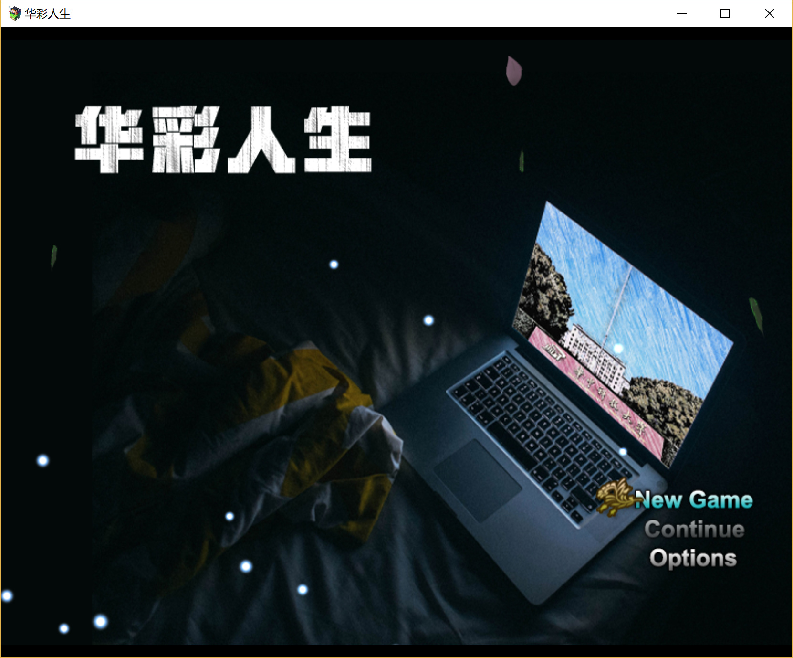

华彩人生——华科模拟器游戏介绍
华彩人生——华科模拟器
华彩人生 – 一款为华科（华中科技大学）量身打造的游戏；一款在华科这片神奇土地上展开的奇幻RPG游戏；一款高仿真的华科模拟器。想要了解华科的同学请务必来玩哦~相信不会让你失望！ 引擎：RPGMaker MV
声明
-
请注意，因为游戏较大，所以在线体验时很可能会出现
- “Now Loading”时间较长
- “Failed to load Game Font”
- “cannot read _actorCMData of null”等问题，请不要着急，请在网速好的地方稍等一会儿，重新加载一遍即可。
-
如果出现“Your Browser does not support Web Audio API”，请更换浏览器使用。（Safari、Chrome等主流浏览器都提供支持）
-
本游戏制作组织为华中科技大学Dian团队707工作组，总监制、总策划为707组组长张中洋（miracleyoo）。
-
本游戏的目的是宣传华中科技大学，可以使玩家在游戏过程中熟悉华科的地图，了解华科地标建筑等；但同时，本游戏也兼具强大的可玩性，可供在校同学、毕业校友、以及所有对华科或是本作品有兴趣的同学享用。
-
本游戏使用的游戏引擎为RPGMaker MV，同时参考了atelierrgss制作的部分插件，在此一并表示感谢。
-
参与本次游戏制作的成员有Dian团队队员： 张中洋、伍瀚缘、朱晓光、黄涛、孙紫檀、张子孺、田祺云。对整个制作流程中诸位的贡献与付出致以诚挚的感谢。
-
如果您在游戏过程中发现bug或有想要提出的建议，请直接提出issue或邮件联系我。
-
如果您准备基于本项目进行改编或是再开发，请务必联系作者张中洋(miracleyoo@163.com)，并注明出处。
游戏特征
- 游戏结合了传统的文字类游戏和RPG游戏的优点，既有文字类游戏式的引导和介绍，又有RPG游戏式的广阔地图可供探索。
- 游戏有多达7条支线可供选择，每一条都经过精心设计，既有相似之处，又各有特色。
- 游戏主地图为华科手绘画风地图，只标注了主要建筑物，便于玩家熟悉地图。
- 游戏中有大量对建筑物和游戏玩法等进行介绍的NPC，相信你可以快速上手。
- 游戏整体画风偏可爱，同时配有放松愉悦的背景音乐，游戏体验良好。
- 游戏战斗部分下足了功夫，采用了半回合制战斗模式，紧张刺激；同时界面友好，操作简单，你可以很快上手战斗并不断取得成就。
- 游戏的平衡性经过了仔细的调节，你可以动用你的智慧击败同级别甚至稍高级的怪物，同时会有随机道具掉落，供你后续战斗中使用。
- 游戏中设置很多彩蛋供你探索，这些彩蛋既有趣，又会提供给你不少有趣的“华科知识”。
- 游戏设有真正可投入使用的华科全校车系统，站点依据实际站点设置。
- 游戏中的网吧和KTV都可以进入。实际上，随着你去网吧的次数越多，你吃鸡的水平也会越高，但同时，会有你意想不到发展出现。
- 游戏中标有华科主要的一些食堂，它们可用于加蓝，并且会随机掉落具有该食堂特色的道具；两个校医院可用于战斗后回复血量使用。
游戏宣传
你看过什么形式的华科宣传？文章？NONONO，太过枯燥；海报？NONONO，信息太少；短视频？NONONO，记不牢靠。
为何无论看了这么多宣传，你还是会迷路？为什么都说华科食堂好吃，你却还是满脸茫然？为什么华科无论是体育设施还是人文美景都质量上乘，你却很久不知其存在？
答：有趣的宣传太抽象，有货的宣传太无聊！
就不能有一个既有趣又有货的介绍吗？？？
当然可以！这就是我们的“华科模拟器”！
在这里，你将化身为游戏中一个即将入学华科的新生，面临从你踏进校门的那一刻开始将要面对的一个又一个选择，真实展现你将要面临的丰富多彩的华科生活。
游戏采用经典的打怪升级模式，促使玩家在探索和搜寻中不断加深对华科的了解。
路边的NPC会给予玩家对重要建筑物的详细介绍，只有方位？Certainly Not！从位置到特色到学生评价都有机的融入其中。
而对华科各个食堂特色的介绍更是“辨析”了华科引以为豪的诸多食堂。介绍可以详细到每一层，而同样，每个食堂可以随机获得的道具：特色食品也各有千秋。
本游戏内核强势弘扬华科价值观——“不学习，就凉凉”，如果你在游戏中经常混迹网吧KTV或被朋友劝说开黑吃鸡，那么，嗯，你就成了一个学渣。
本游戏有精心制作的多条支线，这不但给了你很大的自由选择空间，更提供了一个让你了解华科各种类型建筑的机会——
- 轻音乐线：华科的各种艺术类建筑，雕塑，校史馆，水池湖泊甚至森林公园都会成为相应关键怪物的触发点，这也让你在搜寻和问路的过程中更加深入的了解了华科。
- 网球线：华科的各类体育场馆、操场、篮球场、网球场等都成了活跃的中心，你也可以借此机牢记它们的位置，并在现实生活中也可以来痛快“打”球。
- 学霸线：华科的各类教学楼、实验室、学院大楼都会留下你的足迹。开学？相信来之前你已经成为了一名老司机。
听说你来学校一学期还不知道校车站位置？不如来这里实实在在搭乘一波！你有理由相信真是的华科校车系统和它一样给力！
当然，华科近邻森林公园，而公园里究竟又隐藏着什么等待着你的探索？如果你已经迫不及待了，那就赶紧来下载我们的游戏，亲自体验一番吧！~
游戏截图
